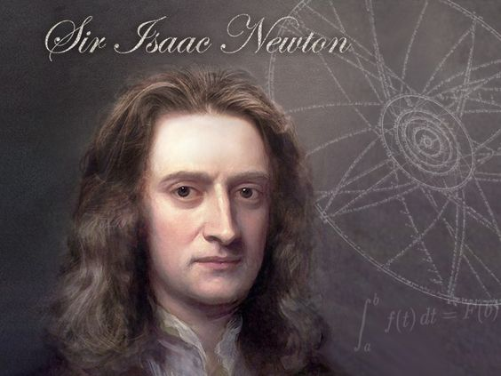
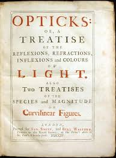

Sir Isaac Newton
Isaac Newton (1642–1727) was an English mathematician, physicist, astronomer, and author who is widely recognized as one of the most influential scientists of all time. He made groundbreaking contributions to many areas of science, including mathematics, physics, astronomy, and optics.
Newton formulated the laws of motion and universal gravitation, which laid the foundation for classical mechanics and described the behavior of objects under the influence of forces. His work "Philosophiæ Naturalis Principia Mathematica" (Mathematical Principles of Natural Philosophy), published in 1687, is one of the most important scientific books ever written.
Newton also made significant advances in optics, demonstrating that white light is composed of a spectrum of colors and developing the first practical reflecting telescope.
His discoveries and theories profoundly shaped the scientific revolution and had a lasting impact on our understanding of the natural world. Newton's work remains influential in physics and mathematics to this day.
Education
- Early Education: Newton was born on January 4, 1643 (according to the Julian calendar, which was in use in England at the time; adjusted to January 4, 1642, in the modern Gregorian calendar). His father died three months before his birth, and his mother remarried when he was three. Newton was initially raised by his maternal grandmother and later by his stepfather.
- Primary Education: Newton attended the King's School in Grantham, Lincolnshire, where he lived with his maternal grandmother. He showed exceptional academic abilities and a keen interest in mechanical contraptions, which he constructed himself.
- University Education: In 1661, at the age of 18, Newton enrolled at Trinity College, Cambridge. Initially, his focus was on pursuing a law degree, but his interests quickly shifted to mathematics and natural philosophy. While at Cambridge, he studied the works of leading scientists and mathematicians of the time, including Galileo, Descartes, and Kepler.
- Mentorship and Influences: At Cambridge, Newton studied under Isaac Barrow, a prominent mathematician and theologian who recognized Newton's exceptional talents. Barrow's mentorship played a crucial role in nurturing Newton's intellectual development.
- Self-Study and Research: Newton's education extended far beyond formal instruction. He engaged in extensive self-study and research, delving into various areas of mathematics, optics, and physics. His independent investigations laid the groundwork for many of his later discoveries and theories.
Carrier
- Fellow of the Royal Society: Newton was elected a Fellow of the Royal Society in 1672, in recognition of his early work on optics, particularly his experiments with light and color.
- Lucasian Professor of Mathematics: In 1669, Newton was appointed Lucasian Professor of Mathematics at the University of Cambridge, a prestigious position previously held by luminaries such as Isaac Barrow and Stephen Hawking. Newton held this position until 1701.
- Knight Bachelor: Newton was knighted by Queen Anne in 1705, becoming Sir Isaac Newton. This honor was bestowed upon him in recognition of his contributions to science and mathematics.
- Master of the Mint: In 1699, Newton was appointed Master of the Mint, a position responsible for overseeing the Royal Mint's operations. He played a crucial role in reforming England's currency and combating counterfeiting.
- Copley Medal: Although the Copley Medal was not established until after Newton's death, he was retroactively awarded the inaugural medal by the Royal Society in 1731 in recognition of his lifetime achievements in science.
- Legacy: Perhaps the most enduring recognition of Newton's contributions is his lasting legacy in the fields of physics, mathematics, and astronomy. His work laid the foundation for classical mechanics and calculus, revolutionizing our understanding of the natural world.
Awards
Isaac Newton did not receive any awards in the modern sense as we understand them today. During his lifetime, the concept of scientific awards, as we have now, wasn't established. However, his contributions to science were widely recognized by his contemporaries, and he received various forms of recognition for his work. Some of these include:
Fellow of the Royal Society: Newton was elected a Fellow of the Royal Society in 1672. This was a prestigious recognition among scientists of his time.
Lucasian Professor of Mathematics: Newton held the Lucasian Professorship of Mathematics at the University of Cambridge from 1669 to 1702. This position was highly esteemed and has been held by many distinguished mathematicians throughout its history.
Knight Bachelor: Newton was knighted by Queen Anne in 1705, which was a significant honor and recognition of his contributions to science.
Master of the Mint: In 1699, Newton was appointed Master of the Mint, where he made significant contributions to currency and financial matters of England.
Copley Medal: Although the Copley Medal was established after Newton's death, he was awarded the inaugural medal posthumously by the Royal Society in 1731 in recognition of his lifetime achievements in science.
While these may not fit the contemporary notion of awards, they signify the esteem in which Newton was held by his contemporaries and subsequent generations, highlighting the profound impact of his scientific contributions.
"BOOKS"
"Philosophiæ Naturalis Principia Mathematica" (Mathematical Principles of Natural Philosophy): This work, commonly referred to as the Principia, was published in 1687. It is one of the most influential scientific books ever written and lays out Newton's laws of motion and universal gravitation. The Principia revolutionized physics and laid the groundwork for classical mechanics.

"Opticks: Or, A Treatise of the Reflections, Refractions, Inflections and Colors of Light": Published in 1704, Opticks presents Newton's groundbreaking theories on the nature of light and color. In this work, he discusses his experiments with prisms and lenses and introduces the concept of the spectrum of light.

"Mathematical Principles of Natural Philosophy and His System of the World": This is an English translation of Newton's Principia, published in 1729 by Andrew Motte. It helped to disseminate Newton's ideas to a wider audience, particularly among English-speaking scholars.